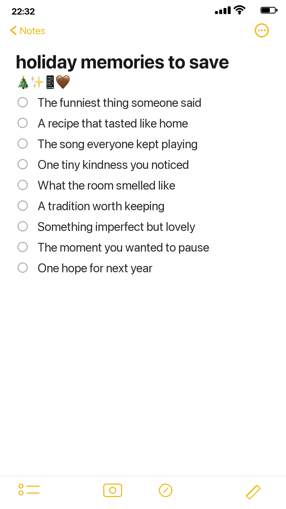

Holiday memories disappear in surprisingly small ways. You remember the meal but forget the joke; you keep the photograph but lose the song that was playing. A phone note is the easiest place to catch details while everyone is still busy.

Keep one running note
Create a note before the season becomes crowded. Add details in the moment, without trying to write beautifully. A few words are enough to help the full memory return later.
Save the funniest thing someone said, a recipe that tasted like home and the song everyone kept playing. Notice one small kindness. Record what the room smelled like. Name a tradition worth keeping and something imperfect that was still lovely.
Before the day ends, add the moment you wanted to pause and one quiet hope for next year.
Turn the note into a journal page
After the holiday, choose only three entries. Give each one a physical clue: a handwritten quotation, a recipe fragment, ribbon from a parcel, a place card, photograph or small piece of packaging.
Arrange the three clues as a loose triangle. Keep the longest piece of writing in the quietest area. Add the date and location even if they feel obvious now.
What not to save
You do not need every receipt, photograph or wrapper. Keep the item that unlocks the story. Photograph anything too bulky, damp, oily or likely to deteriorate. Remove addresses and financial details before using mail or receipts.
Make space for the real holiday
The note should reduce pressure, not create another task. Add fragments when convenient and ignore it when you are present with people. Your journal page can wait.
The finished page will feel richer because it holds sensory and human details, not only the polished moments that reached the camera. The little things are often the part you will be happiest to find next year.
A gentle page structure
Use one large quiet paper as the background. Place a photograph or meaningful object slightly off-center. Add the funniest quotation on a narrow strip, then hide the more reflective memory beneath a flap. Repeat one ribbon or paper color twice so the separate moments feel connected.
Keep the holiday palette restrained. Choose one evergreen or deep neutral, one warm light such as candle cream, and one accent taken from the actual day. That accent might be red ribbon, blue wrapping paper or the gold edge of a card. You do not need every traditional holiday color.
If several people contributed memories, preserve their exact words and names. A misspoken phrase or peculiar family expression carries more life than polished summary writing.
At the end of the season, duplicate the phone note before deleting anything. Copy its most important lines into the journal, export a screenshot if desired and keep the original until the page is complete. The temporary note is a bridge between a busy lived moment and the slower act of remembering it well.